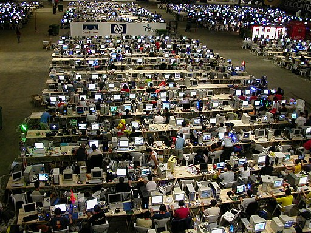

Attaching package: 'dplyr'The following objects are masked from 'package:stats':
filter, lagThe following objects are masked from 'package:base':
intersect, setdiff, setequal, union
Attaching package: 'dplyr'The following objects are masked from 'package:stats':
filter, lagThe following objects are masked from 'package:base':
intersect, setdiff, setequal, union
{dplyr} Jedi
{DBI}Unified set of methods & classes bridging interfacing R to database management systems (DBMS)
You have used connections in R (and may not realize it)
read.csv("path/to/file.csv", stringsAsFactors = FALSE)
readr::read_csv("path/to/file.csv")
openxlsx::write.xlsx(df, file = "/path/to/file.xlsx")Behind the scenes: connections are dynamically created (and terminated) during file input/output.
Hosted on server
Access via authentication
Ideal for production-grade DB workflows
library(DBI)
library(RSQLite)
# initialize connection object
con <- dbConnect(
drv = RSQLite::SQLite(),
dbname = ":memory:"
)
# send data frame to a table
dbWriteTable(con, "sim_patients", sim_patients)
# disconnect when done
#dbDisconnect(con){dplyr} Skillz{dbplyr} provides automatic translation from dplyr syntax to SQL statements
{DBI}{dplyr} Skillzlibrary(dplyr)
sim_patients_db <- tbl(con, "sim_patients")
sim_patients_db %>%
group_by(ethnicity) %>%
count()# Source: SQL [2 x 2]
# Database: sqlite 3.39.4 [:memory:]
ethnicity n
<chr> <int>
1 hispanic 20
2 nonhispanic 140
Logical ways to manage connections when developing solo

{pool}!Abstraction layer on top of database connection objects
con <- dbConnect(
drv = RSQLite::SQLite(),
dbname = ":memory:"
)pool <- dbPool(
drv = RSQLite::SQLite(),
dbname = ":memory:"
)Optimize backend calculations in {simclindata.shiny} with SQLite database